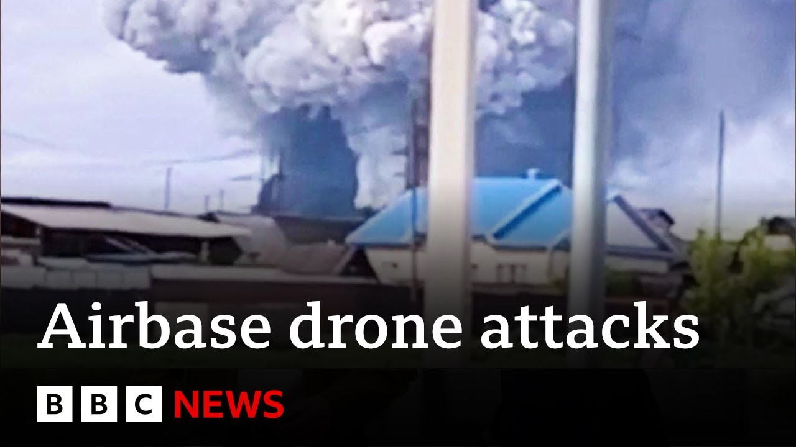

【俄罗斯证实乌克兰对空军基地实施无人机袭击 | BBC新闻】
Summary: Ukraine launched large-scale drone strikes targeting Russian bomber aircraft at multiple distant air bases, including locations in Siberia, causing significant damage and demonstrating strategic audacity.
摘要： 乌克兰对俄罗斯多个偏远空军基地的轰炸机发动大规模无人机袭击，包括西伯利亚地区，造成重大损失，展现了战略胆识。

⏱️ Estimated Reading Time: 9 min
Ukraine claims to have hit more than 40 Russian bombers in what the country's security service says is a large-scale special operation aimed at destroying enemy bomber aircraft.
乌克兰声称击中了40多架俄罗斯轰炸机，该国安全部门称这是一次旨在摧毁敌方轰炸机的大规模特别行动。
The attacks are reported to have taken place at several Russian air bases, some many thousands of kilometers from Ukraine.
据报道，袭击发生在俄罗斯的几个空军基地，其中一些距离乌克兰数千公里。
Two locations are understood to be in Siberia, the Ballaya air base in southern Russia and the Oenia air base which is near in the north near Mansk.
据了解，其中两个地点位于西伯利亚，分别是俄罗斯南部的巴拉亚空军基地和靠近北部曼斯克的奥尼亚空军基地。
Well, the Ukrainian military has released footage which it says shows a line of Russian war plananes at Ballaya.
乌克兰军方发布的视频显示，巴拉亚空军基地停有一排俄罗斯军用飞机。
It appears to have been filmed by a drone and shows the aircraft exploding.
视频似乎由无人机拍摄，画面显示飞机爆炸。
Russian media is reporting the attack in Mamman, but says air defenses are working.
俄罗斯媒体报道了马曼的袭击，但称防空系统正在运作。
Our world affairs correspondent Paul Adams is in key for us.
我们的国际事务记者保罗·亚当斯正在基辅为我们报道。
Far from Ukraine's borders, an attack of astonishing audacity.
远离乌克兰边境，一次令人震惊的大胆袭击。
Russian strategic bombers picked off one by one by a fleet of drones.
俄罗斯战略轰炸机被无人机群逐一击毁。
Ukraine calling this operation spid web personally overseen by President Zalinski.
乌克兰称此次行动为“蜘蛛网”，由总统泽连斯基亲自监督。
One of Kiev's boldest attacks so far.
这是基辅迄今为止最大胆的袭击之一。
A reminder despite Russia's overwhelming strength in numbers that Ukraine is a resourceful, determined enemy.
尽管俄罗斯在数量上占据压倒性优势，但乌克兰仍是一个足智多谋、意志坚定的对手。
Sources say this took a year and a half to prepare.
消息称此次行动筹备了一年半。
Dozens of drones smuggled into Russia, stored on wooden pallets, loaded onto trucks, driven to distant air bases, and launched remotely.
数十架无人机被偷运进俄罗斯，存放在木托盘上，装上卡车，运往偏远空军基地，远程发射。
Swarms of drones picked up on social media from Siberia to the Arctic Circle.
从西伯利亚到北极圈，社交媒体上出现了无人机群的画面。
At a petrol station north of Kutsk, a glimpse of the operation in progress.
在库茨克北部的一个加油站，可以看到行动正在进行。
With smoke already rising behind, a drone emerges from the truck and heads off to join the attack.
后方烟雾升起，一架无人机从卡车中飞出，加入攻击。
Moments later, another and gunfire as police officers try to bring it down.
片刻之后，另一架无人机出现，警察开枪试图击落它。
From base to base, the smoldering aftermath testifying to the scope and ambition of the operation.
从一个基地到另一个基地，燃烧的残骸证明了行动的规模和野心。
Ukraine says it's done $2 billion worth of damage.
乌克兰称造成了价值20亿美元的损失。
A claim impossible to verify.
这一说法无法核实。
Earlier, a different kind of wreckage.
早些时候，另一种残骸。
This the Ukrainian city of Zaparisia after the country suffered another major drone and missile attack.
这是乌克兰城市扎帕里西亚，该国遭受了又一次大规模无人机和导弹袭击。
Elsewhere, 12 Ukrainian soldiers were killed at a training base.
在其他地方，12名乌克兰士兵在一个训练基地丧生。
The head of Ukraine's land forces tendering his resignation.
乌克兰陆军司令提交了辞呈。
What chance then for another round of peace talks due to take place in Istanbul tomorrow.
明天将在伊斯坦布尔举行的新一轮和平谈判还有多少机会？
Russian and Ukrainian delegations are expected to be there, but after 24 hours of mayhem, the omens for a breakthrough do not seem good.
俄罗斯和乌克兰代表团预计将出席，但经过24小时的混乱，取得突破的迹象似乎不佳。
Paul Adams reporting there.
保罗·亚当斯在那里报道。
Well, for more analysis, uh, I spoke earlier to Mikey Kay, the presenter of the BBC's security brief program.
为了进一步分析，我之前采访了BBC安全简报节目主持人米基·凯。
Well, Mike is also a former senior officer off officer in the British military.
米基曾是英国军方的高级军官。
Two very separate locations, Reini.
两个相距甚远的地点，雷尼。
One in Mamman up on the Finnish border, but the the really critical one is uh the one down in Akus, which is all the way down to the east on the Mongolian border.
一个在芬兰边境的马曼，但真正关键的是靠近蒙古边境的阿库斯。
So thousands and thousands of kilometers apart.
两地相隔数千公里。
Um and they've combined the Ukrainians have combined a concept of sabotage and just the uh just how difficult it is to not only detect a drone or swarms of drones but actually take them down as well.
乌克兰人结合了破坏的概念，以及不仅探测无人机或无人机群的难度，还包括击落它们的难度。
And you know I was speaking about this on the Ukraine cast um just the other day with Lucy Hawkins.
前几天我和露西·霍金斯在乌克兰播客上讨论过这个问题。
You know there's a lot of drone technology out there.
现在有很多无人机技术。
Ukraine is leading from the front on that for offensive strike.
乌克兰在进攻性打击方面处于领先地位。
But the bit which is really making governments struggle at the moment is how do you detect and then how do you shoot them down especially if they're a swarm and we can see from these the these this video footage just how devastating the effect is.
但真正让各国政府头疼的是如何探测并击落它们，尤其是无人机群，我们从视频中可以看到其破坏性有多大。
You're talking about strategic long range deep attack assets.
这些是战略性的远程纵深打击资产。
So you've got an A50 in there which has been hit which is an airborne early warning aircraft.
其中一架被击中的A50是空中预警机。
You don't get many of those in in inventories.
这种飞机库存不多。
And then you got the TU95 Bear and the Tu22 Tupel of um uh Blackjack.
还有图-95“熊”和图-22“逆火”轰炸机。
Both of these aircraft can carry up to eight cruise missiles and they can fly a long distance.
这两种飞机均可携带多达八枚巡航导弹，航程极远。
You know, we see TU95s coming around the Northern Cape, over the top of Norway, and then over the top of the UK and all the way down past Ireland.
我们经常看到图-95绕行北角，飞越挪威，再飞越英国，一路南下经过爱尔兰。
That's the range of these assets.
这就是这些资产的航程。
So to have 40 of them taken out in this uh offensive drone strike by Ukraine will will will hit Putin really really hard.
乌克兰此次无人机袭击摧毁了40架这样的飞机，将对普京造成沉重打击。
I just want to briefly ask you because we're hearing reports on Reuters from Russia's defense ministry.
我想简单问一下，因为我们听到路透社援引俄罗斯国防部的报道。
They say all attacks on the airfields have been repelled.
他们称所有对空军基地的袭击均被击退。
Uh and they do say and confirm that several aircraft caught fire after those attacks.
但他们也确认有几架飞机在袭击后起火。
Um what about the defense systems then on the Russian side?
那么俄罗斯的防御系统呢？
Well, I mean, you know, the the Russians just aren't will not have been prepared for something like this in a Kushk, which is down near Mongolia.
俄罗斯人根本没有预料到在靠近蒙古的库什克会发生这样的事情。
Russians have what's called S400 uh anti-aircraft anti- cruise missile systems, but they're designed to take out exactly that.
俄罗斯拥有S400防空反巡航导弹系统，但它们的设计用途并非如此。
They're not designed to take out drones.
它们并非用于击落无人机。
There's new technology in the counter um counter UAS or the counter drone warfare space, which involves um laser weapon systems.
反无人机领域的新技术包括激光武器系统。
The Americans have have trial and proven a laserbased capability.
美国已经试验并验证了激光能力。
The Brits are trying all sorts.
英国人正在尝试各种方法。
They're looking at what's called RF, radio frequency, and that's basically either taking a drone out with something like RF or preventing at least the controller talking to the drone.
他们研究的是射频技术，即用射频击落无人机或至少阻止控制器与无人机通信。
So that the controller talks to the drone through a through an RF, a radio frequency, and it's it's intercepting that if you like, but it's extremely difficult and governments are behind the curve on this deterrence of drones and Ukraine has basically exploited that because the Russians would never have expected something like this.
控制器通过射频与无人机通信，拦截这种信号极其困难，各国政府在无人机威慑方面落后，乌克兰正是利用了这一点，因为俄罗斯人从未预料到这样的事情。
and they were brought in through cabins uh on trucks and then the the roofs were taken off and uh taken off and then the drones came up.
无人机通过卡车车厢运入，然后车顶被拆除，无人机升空。
I mean, this is it's I mean, it's it's genius if if you think about just the devastating effect that it's had on strategic assets of of Putin.
考虑到它对普京战略资产的毁灭性影响，这简直是天才之举。